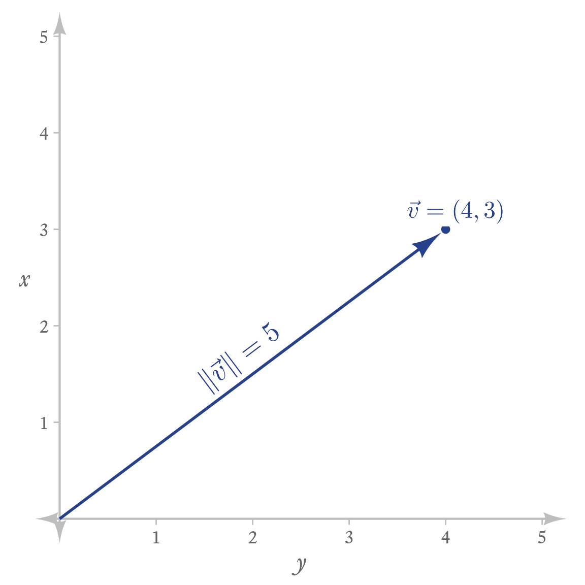
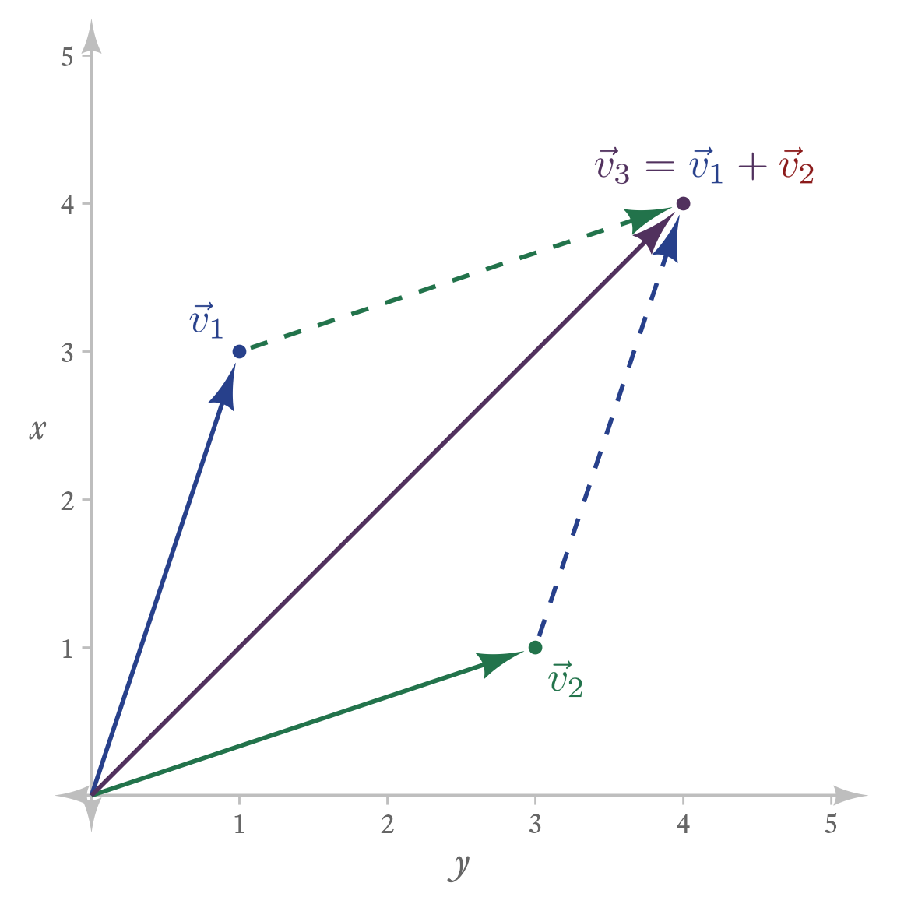

viewof fs =
Inputs.form({
xi: Inputs.range([-1,1], {
format: (x) => x,
value: 1,
step: .01,
label: md`*x* `,
labelStyle: "width: 50px"
}),
yi: Inputs.range(
[-1,1],
{value: 1,
step: .01,
vertical: true,
label: md`*y*`}),
a: Inputs.range(
[-5,5],
{value: 2,
step: .01,
label: md`*a* `,
description: 'Scalar'})
})
ax = fs.xi * fs.a
ay = fs.yi * fs.a
theta=Math.atan2(ay,ax)
dd=[{
x: fs.xi,
y: fs.yi,
ax: ax,
ay: ay,
x0: 0,
y0: 0,
a: fs.a,
theta: theta }]
ns = Inputs.range().classList[0]
html`
<style>
form.${ns} {--input-width: 600px; --label-width: 15px;}
.${ns}-input>input[type=number] {flex-shrink:6;}
</style>
`4 Vectors
Vectors are sequences of numbers. The notation for vectors is not always applied consistently, but often vectors are topped with an arrow (or are bold lowercase letters), and the elements are listed in parentheses and separated by commas. A vector \vec{x} with elements 4 and 3 would be notated like so:
A vector is an ordered sequence of values.
\vec{x}=\left(4,3\right)
The vector length refers to how many elements it has, not its magnitude. So a 2-element vector like (x_1,x_2) has a length of 2.
A vector’s length is the number of elements the vector contains.
A sequence of indeterminate length n, would be notated like so
\vec{x}=\left(x_1,x_2,\ldots,x_n\right)
4.1 Making vectors in R
R is a peculiar peculiar language in that almost every object created in R is ultimately a vector of some kind or another. Here we are concerned with vectors made with real numbers (i.e., positive and negative numbers that can have decimals).
R can create vectors from many other types of data (e.g., integers, complex numbers, logical values, text, and raw binary numbers). A more advanced discussion about vectors in R can be found here.
4.1.1 Making vectors with the c function
Vectors in R are created in many ways, but the most common way to join vector elements is with the c function. The c function “combines” (or concatenates) elements into a vector. For example, to combine 3 and 5:
To concatenate is to link things together in a chain or series.
x <- c(3, 5)
4.1.2 Making vector sequences with the : operator
You can make sequential integer sequences with the : operator. To make a sequence from 1 to 5:
1:5[1] 1 2 3 4 5To make a decreasing vector from 4 to 0:
4:0[1] 4 3 2 1 0
4.1.3 Making vector sequences with seq function
The seq function allows for sequences of any interval or length.
seq(1,5)[1] 1 2 3 4 5Decreasing from 5 to 1:
seq(5,1)[1] 5 4 3 2 1The by argument specifies the interval between elements. Here we specify a sequence from 0 to 1 by .1 intervals:
seq(0, 1, 0.1) [1] 0.0 0.1 0.2 0.3 0.4 0.5 0.6 0.7 0.8 0.9 1.0For decreasing sequences, the by argument needs to be negative:
seq(5, 3, -0.5)[1] 5.0 4.5 4.0 3.5 3.04.2 Selecting Specific Elements in a Vector
In R, there are several ways to select elements in a vector—by position, by condition, and by name.
4.2.1 Selecting by Position
Suppose we have a vector with 5 elements:
\vec{x}=\left(10,20,30,40,50\right)
First I define \vec{x}
x <- seq(10, 50, 10)
x[1] 10 20 30 40 50The 3rd element, 30, can be selected like so:
x[3][1] 30If I want both the 3rd and 5th elements, I use a vector inside the square brackets:
x[c(3, 5)][1] 30 504.2.2 Selecting by Condition
R can select elements meeting any condition that evaluates to the logical value of TRUE. For example, which values of \vec{x} are greater than 35?
x > 35[1] FALSE FALSE FALSE TRUE TRUEThis creates a vector of 5 elements that are either TRUE or FALSE. We can select just the elements for which the condition is TRUE like so:
x[x > 35][1] 40 504.2.3 Selecting by Name
In R, vector elements can have names. We can assign them directly like this:
x <- c(a = 1, b = 2, c = 3, d = 4, e = 5)
xa b c d e
1 2 3 4 5 We can also assign names using the names function:
We can select specific named elements like so:
x[c("a", "d")]a d
1 4 We can select them in any order:
x[c("d", "a")]d a
4 1 We can even have repeats:
x[c("a", "a", "b")]a a b
1 1 2 4.3 Scalar–Vector Operations
When a scalar and a vector appear together in an operation, the operation is applied to the scalar and to every element in the vector.
4.3.1 Scalar–Vector Multiplication
To multiply a scalar by a vector, multiply every element in the vector by the scalar. If a is a scalar,
a\vec{x}=\left(ax_1, ax_2,\ldots, ax_n\right)
They are called “scalars” because a scalar multiplied by a vector “scales” the vector by changing its magnitude.
\left\|a\vec{x}\right\|=a\left\|\vec{x}\right\|
You can play with scalar multiplication with the web app in Figure 4.1. Set the x and y coordinates for the blue vector, and alter the scalar a to see how the red vector’s magnitude changes. When a is negative, the red vector reverses direction.
4.3.2 Scalar–Vector Division
Scalar-vector division looks just like it does in regular algebra and can take on a variety of forms:
\vec{x}/a=\frac{\vec{x}}{a}=\frac{1}{a}\vec{x}=a^{-1}\vec{x}=\vec{x}\div a
4.3.3 Scalar-Vector Addition
Scalar–vector addition works in similar fashion. To add scalar to a vector:
\vec{x}+a=\left(x_1+a,x_2+a,\ldots,x_n+a\right)
That is, the scalar is added to every value of the vector.
4.3.4 Scalar-Vector Subtraction
To subtract:
\vec{x}-a=\left(x_1-a, x_2-a,\ldots,x_n-a\right)
4.3.5 Scalar-Vector Operations in R
In R, almost everything—even things that look like scalars—are really vectors. When a scalar (i.e., a vector of length 1) and a longer vector are added, subtracted, multiplied, or divided, the scalar is “recycled” across all the values of longer vector. This is also true when a short vector (e.g., of length 2) is added to a longer vector (e.g., of length 4): the shorter vector is recycled across the longer vector. For example,
c(1,2) + c(1,2,3,4) will return 2 4 4 6Scalar-vector operations look just alike scalar-scalar operations:
4.4 Vector–Vector Operations
A vector–vector operation is when one vector operates on another vector.
4.4.1 Vector Addition and Subtraction
To add two vectors, add each element at the same position:
\begin{aligned} \vec{x}&= \left(x_1,x_2,\ldots,x_n\right)\\ \vec{y}&= \left(y_1,y_2,\ldots,y_n\right)\\ \vec{x}+\vec{y}&= \left(x_1+y_1,x_2+y_2,\ldots,x_n+y_n\right)\\ \end{aligned}
As an example:
\begin{aligned} \vec{x}&= \left(1,2\right)\\ \vec{y}&= \left(3,4\right)\\ \\ \vec{x}+\vec{y}&= \left(1+3,2+4\right)\\ &= \left(4,6\right) \end{aligned}
Vector subtraction works the same way as vector addition, subtracting each element at the same position:
\vec{x}-\vec{y}= \left(x_1-y_1,x_2-y_2,\ldots,x_n-y_n\right)
Adding and subtracting two vectors is only defined when the vectors have the same number of elements. Thus, if \vec{x}= \left(1,2\right) and \vec{y}= \left(3,2,1\right), there is no defined way to add \vec{x} and \vec{y}.
In R, adding and subtracting vectors is beautifully easy. Most operations in R are vectorized, meaning that functions automatically operate on all elements of the vector. Unlike many programming languages, R does not require looping structures to add each element pair one at a time. This feature of R simplifies calculations greatly. For addition, we just define the vectors and add them:
In many programming languages, adding vectors would require looping. R has looping structures, too. They are useful for complex operations, but they are overkill for simple operations. For example, instead of just typing x + y, looping through each element of x and y would look like this:
[1] 4 6Truth be told, if the language requires this kind of extra verbiage, there are usually shortcut functions to avoid the hassle. Thankfully R does not need any shortcuts. The natural way of performing operations is already short enough.

A vector with two scalar elements can be thought of as an arrow in a coordinate plane, as in Figure 4.2. The vector \left(4, 3\right) is an arrow that displaces any point it is added to by 4 units to the right and 3 units up.

In Figure 4.4, you can play with vector addition.
4.4.2 Vector Norms
If we visualize a vector as an arrow, we can ask how long the arrow is from end to end. The norm is the vector’s magnitude. Imagine the vector’s n elements plotted as a single point in n-dimensional space. The norm is the distance of the point to the origin (i.e., a vector of n zeroes). The distance referred to here is technically the Euclidean distance, which is a generalization of the Pythagorean Theorem to more than 2 dimensions. To calculate it, take the square root of the sum of all squared values in the vector.
A vector’s norm is the Euclidean distance of the vector’s n elements to the origin in n-dimensional space.
Vector norms sometimes have notation that can be confused with absolute values:
\left|\vec{x}\right|
The notational confusion is not accidental. Scalar absolute values and vector norms both refer to magnitude. Indeed, if you apply the formula for vector norms to a vector with one element, the result is the absolute value:
\sqrt{x_1^2} = |x_1|
However, to avoid the ambiguity between vector norms and taking the absolute value of each element, I will use the double bar notation:
\left\|\vec{x}\right\|
I tend to be fastidious about distinguishing between vector length (the number of elements in a vector) and vector norms (the vector’s magnitude) because the concepts are easily confused. Further confusion is that the norm of a vector is not the same thing as a normal vector, which is a vector that is perpendicular to a surface (e.g., a plane, a sphere, or any other multidimensional object) at a given point. A normal vector has nothing to do with the normal distribution.
\left\|\vec{x}\right\|=\sqrt{x_1^2+x_2^2+\ldots+x_n^2}
To calculate a vector norm in R by hand is straightforward:
If you can remember that this kind of norm (there are others) is a “type 2” norm, then a vector norm can be calculated with the norm function:
norm(x, type = "2")[1] 54.4.3 Unit Vectors
A vector norm is useful for creating unit vectors, which have the same direction as the original vector but have a norm (i.e., magnitude) of 1.
A unit vector \vec{u} has a norm of 1: \left\|\vec{u}\right\|=1
So a unit vector \vec{u} that has the same direction as vector \vec{x} = \left(3,4\right) is:
\begin{align*} \vec{u}&=\frac{\vec{x}}{\left\|\vec{x}\right\|}\\ &=\frac{\left(3,4\right)}{\sqrt{3^2+4^2}}\\ &=\frac{\left(3,4\right)}{5}\\ &=\left(.6,.8\right) \end{align*}
We can verify that \vec{u} has a norm of 1:
\begin{align*} \left\|\vec{u}\right\|&=\left\|\left(.6,.8\right)\right\|\\ &=\sqrt{.6^2+.8^2}\\ &=1 \end{align*}
Unit vectors have many uses, including the calculation of correlation coefficients.
4.4.4 Vector Multiplication
There are several different ways that vectors can be multiplied. For now, the most important are element-wise multiplication and dot-product multiplication.
4.4.4.1 Element-wise Multiplication (\circ)
This kind of multiplication is analogous to vector addition and subtraction. If two vectors have the same length (i.e., number of elements), element-wise multiplication creates a vector of the same length by multiplying each element. Thus,
\begin{aligned} \vec{x}&= \left(x_1,x_2,\ldots,x_n\right)\\ \vec{y}&= \left(y_1,y_2,\ldots,y_n\right)\\ \vec{x}\circ \vec{y}&= \left(x_1y_1,x_2 y_2,\ldots,x_n y_n\right)\\ \end{aligned}
In R, element-wise multiplication is straightforward. Just multiply the vectors with the * operator.
4.4.4.2 Dot-Product Multiplication (\cdot)
This is the same as element-wise multiplication, but the products are added together to create a scalar.
\begin{aligned} \vec{x}&= \left(x_1,x_2,\ldots,x_n\right)\\ \vec{y}&= \left(y_1,y_2,\ldots,y_n\right)\\ \vec{x}\cdot \vec{y}&= x_1 y_1+x_2 y_2+\ldots+x_n y_n\\ \end{aligned}
If \vec{x}=(1,2) and \vec{y}=(3,4),
\begin{aligned} \vec{x} \cdot \vec{y}&=1\cdot 3+2\cdot 4\\ &=3+8\\ &=11 \end{aligned}
As will be seen later, the dot-product of 2 vectors is performed in R with the same operator as matrix multiplication: %*%.
However, if this is hard to remember, then the dot product can thought of as “the sum of the elements multiplied” like so:
sum(x * y)[1] 11I was surprised to learn that in matrix algebra dot-product multiplication is much more often used than element-wise multiplication. Indeed, matrix multiplication consists of many dot-product multiplications. Apart from that, dot-product multiplication has a number of important applications related to the Law of Cosines, finding orthogonal vectors (i.e., vectors at right angles), and the geometric interpretation of correlation coefficients. I will leave those topics for later.